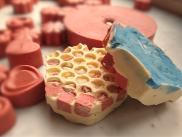
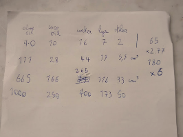

My roommate and I made these soap bars.
Soapmaking is a rewarding hobby because you can personalize the recipe and mold to make a unique and useful product. We used what's called 'the cold process' of making soap.
The oil is 80% olive and 20% coconut oil. We thought of making traditional Marseille soap which is made from 100% olive oil, but added some coconut for extra strength and lather. For aromas, we used a lot of citrus peel oil and lavender etheric oil. We also dried and powdered mandarin peels and added them to the mix. The olive oil creates a nice yellow-greenish base color, but we did mix in inert mineral dyes like iron oxide, French ochre and ultramarine.
Having spent a lot on ingredients already, I was looking for a cheap hexagonal mold. One day I literally stumbled upon it on a bike path, in the form of a plastic gravel stabilizer plate which can be found in construction stores. For added honeycomb structure we put the mold on top of bubble wrap.
